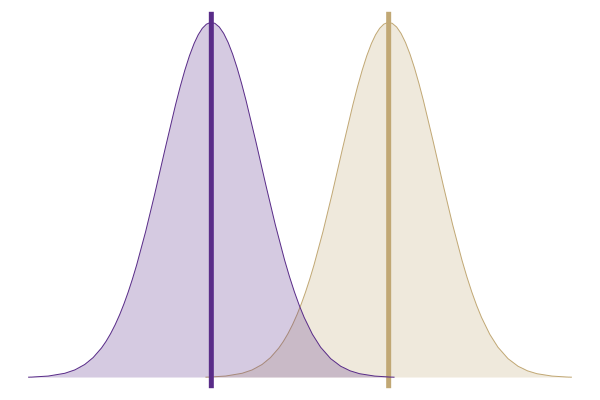
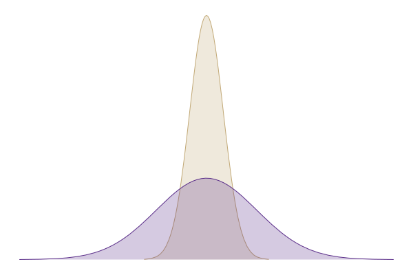
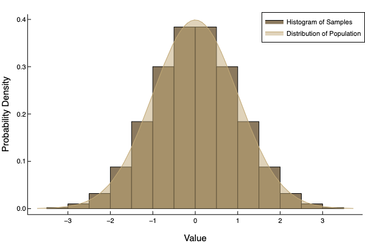
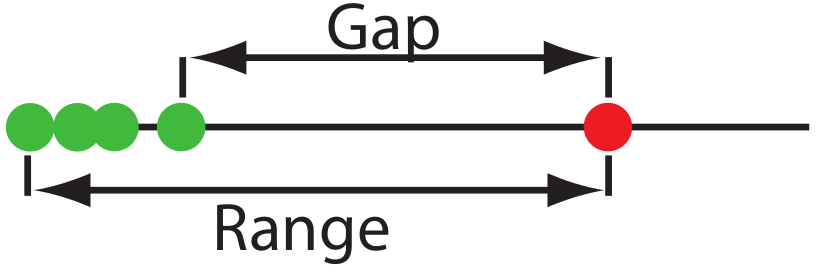

layout: true .footer[ - <div class="tooltip"><a href="/"><i class="fas fa-home"></i></a> <span class="tooltiptext">Go to C370 Main Page</span></div> - <div class="tooltip"><a href="/lecture-slides"><i class="fas fa-chalkboard-teacher"></i></a><span class="tooltiptext">Go to Lecture List</span></div> - <div class="tooltip"><i class="fas fa-question"></i><span class="tooltiptext">Press <kbd>Shift</Kbd> + <kbd>?</kbd> for Navigation Tips!</span></div> ] --- class: center <!-- ========================= Title Slide ============================= --> <div style="margin-top: 100px;"></div> <h1 style = "text-align: left; font-weight: bold; margin-left: 175px;">Week 2: Describing Data</h1> <h5 style = "text-align: left; font-weight: bold; margin-left: 175px;">Harvey Chs 2, 3, 4</h5> <h5 style = "text-align: left; font-weight: bold; margin-left: 175px;">Granger Ch 22</h5> <img src="img/chapter-4/accurate-v-precise_5.png" style = "height:250px; margin-left: auto; margin-right: auto; display: block;"> --- ??? - Goal of class, esp. lab, is to learn how to know when you're likely right -- or, more importantly -- when you're not right! - Tylenol Example - If you get close to the label conc., are you right? Is the difference important? - If you are far from the label conc., are you wrong? --- # Accuracy vs. Precision <img src="img/chapter-4/dartboard.png" style = "height:500px; margin-left: auto; margin-right: auto; display: block;"> .image-credit[[Arbeck via Wikimedia Commons](https://commons.wikimedia.org/wiki/File:Accuracy_and_Precision.svg), [CC BY 4.0](https://creativecommons.org/licenses/by/4.0) ] <!-- =============================== Errors ======================================= --> --- ??? Picture of instrument Chem Domain --> Instrument ---> Electrical Domain (Signal) --> Data Domain (x) *Each step introduces noise and error!* Methods may be **total analysis** methods, but most instrumental methods are not -- they are **conentration techniques**.. --- # Experimental Errors Every real datum will contain **signal**, $S$, and the **noise**, $N$. In an instrument, this yields the **signal-to-noise ratio**, $\frac{S}{N}$ or $S$:$N$. --- # Measurements Analytical measurements can be represented as: $$ \text{Signal} = \text{Sensitivity} \times \text{amount} $$ $$ S\_{total} = k\_A C\_A $$ -- A **total analysis** gives a total signal, $S\_{total}$: $$ S\_{total} = k\_A n\_A + S\_{mb} $$ **Instrumental methods** more commonly give: $$ S\_{total} = k\_A C\_A + S\_{mb} $$ --- <!-- =============================== Describing Data ======================================= --> --- # Cu in Flour **Question:** What is the copper concentration in whole wheat flour? **Approach:** Measure with Flame Atomic Absorption **Answer:** 2.9 mg/kg -- **Answer #2:** 3.1 mg/kg -- The more measurements you take, the 'better' your answer will be. (**law of large numbers**) The **central limit theorem** states that random errors will tend to cancel each other out when averaged together, even if they aren't *normally distributed* --- # Cu in Flour **Cu in Wholemeal Flour Data**: A numeric vector of 24 determinations of copper in wholemeal flour, in parts per million. .image-credit[Analytical Methods Committee (1989) *The Analyst* 114, 1693–1702.] ```julia using RDatasets Cu = dataset("MASS", "chem") ``` ```julia i │ ppm i │ ppm SUM of ppm: 102.73 │ Float64 │ Float64 MAX of ppm: 28.95 --- | -------- --- | --------- MIN of ppm: 2.2 1 │ 2.9 13 │ 5.28 2 │ 3.1 14 │ 3.37 3 │ 3.4 15 │ 3.03 4 │ 3.4 16 │ 3.03 5 │ 3.7 17 │ 28.95 6 │ 3.7 18 │ 3.77 7 │ 2.8 19 │ 3.4 8 │ 2.5 20 │ 2.2 9 │ 2.4 21 │ 3.5 10 │ 2.4 22 │ 3.6 11 │ 2.7 23 │ 3.7 12 │ 2.2 24 │ 3.7 ``` --- <!-- ========================= Central Tendency ============================= --> # Measures of Central Tendency  --- # Measures of Central Tendency ```julia i │ ppm i │ ppm SUM of ppm: 102.73 │ Float64 │ Float64 MAX of ppm: 28.95 --- | -------- --- | --------- MIN of ppm: 2.2 1 │ 2.9 13 │ 5.28 2 │ 3.1 14 │ 3.37 3 │ 3.4 15 │ 3.03 4 │ 3.4 16 │ 3.03 5 │ 3.7 17 │ 28.95 6 │ 3.7 18 │ 3.77 7 │ 2.8 19 │ 3.4 8 │ 2.5 20 │ 2.2 9 │ 2.4 21 │ 3.5 10 │ 2.4 22 │ 3.6 11 │ 2.7 23 │ 3.7 12 │ 2.2 24 │ 3.7 ``` --- exclude: true # Mean $$ \overline{X} = \frac {\sum_{i = 1}^n X_i} {n} $$ ```julia i │ ppm i │ ppm SUM of ppm: 102.73 │ Float64 │ Float64 MAX of ppm: 28.95 --- | -------- --- | --------- MIN of ppm: 2.2 1 │ 2.9 13 │ 5.28 2 │ 3.1 14 │ 3.37 3 │ 3.4 15 │ 3.03 4 │ 3.4 16 │ 3.03 5 │ 3.7 17 │ 28.95 6 │ 3.7 18 │ 3.77 7 │ 2.8 19 │ 3.4 8 │ 2.5 20 │ 2.2 9 │ 2.4 21 │ 3.5 10 │ 2.4 22 │ 3.6 11 │ 2.7 23 │ 3.7 12 │ 2.2 24 │ 3.7 ``` --- exclude: true # Median $$ \widetilde{X} = \frac{1}{2} \left( x\_{\lfloor \frac{n+1}{2} \rfloor} + x\_{\lceil \frac{n+1}{2} \rceil} \right) $$ ```julia i │ ppm i │ ppm SUM of ppm: 102.73 │ Float64 │ Float64 MAX of ppm: 28.95 --- | -------- --- | --------- MIN of ppm: 2.2 1 │ 2.9 13 │ 5.28 2 │ 3.1 14 │ 3.37 3 │ 3.4 15 │ 3.03 4 │ 3.4 16 │ 3.03 5 │ 3.7 17 │ 28.95 6 │ 3.7 18 │ 3.77 7 │ 2.8 19 │ 3.4 8 │ 2.5 20 │ 2.2 9 │ 2.4 21 │ 3.5 10 │ 2.4 22 │ 3.6 11 │ 2.7 23 │ 3.7 12 │ 2.2 24 │ 3.7 ``` ??? Median is less affected by outliers. This makes it good for things like income, home price, stream gage, wind speed, etc. -- anything where there are very low and very high values mixed in with the "average" values. --- <!-- ========================= Spread ============================= --> # Measures of Spread <div style="margin-top: 100px;"></div>  --- exclude: true # Range $$ w = X\_\text{largest} - X\_\text{smallest} $$ ```julia i │ ppm i │ ppm SUM of ppm: 102.73 │ Float64 │ Float64 MAX of ppm: 28.95 --- | -------- --- | --------- MIN of ppm: 2.2 1 │ 2.9 13 │ 5.28 2 │ 3.1 14 │ 3.37 3 │ 3.4 15 │ 3.03 4 │ 3.4 16 │ 3.03 5 │ 3.7 17 │ 28.95 6 │ 3.7 18 │ 3.77 7 │ 2.8 19 │ 3.4 8 │ 2.5 20 │ 2.2 9 │ 2.4 21 │ 3.5 10 │ 2.4 22 │ 3.6 11 │ 2.7 23 │ 3.7 12 │ 2.2 24 │ 3.7 ``` --- exclude: true # Standard Deviation $$ s = \sqrt{\frac {\sum\_{i = 1}^{n} \left(X\_i - \overline{X}\right)^{2}} {n - 1}} $$ ```julia i │ ppm i │ ppm SUM of ppm: 102.73 │ Float64 │ Float64 MAX of ppm: 28.95 --- | -------- --- | --------- MIN of ppm: 2.2 1 │ 2.9 13 │ 5.28 2 │ 3.1 14 │ 3.37 3 │ 3.4 15 │ 3.03 4 │ 3.4 16 │ 3.03 5 │ 3.7 17 │ 28.95 6 │ 3.7 18 │ 3.77 7 │ 2.8 19 │ 3.4 8 │ 2.5 20 │ 2.2 9 │ 2.4 21 │ 3.5 10 │ 2.4 22 │ 3.6 11 │ 2.7 23 │ 3.7 12 │ 2.2 24 │ 3.7 ``` --- exclude: true # Relative Standard Deviation $$ s\_r = \frac{s}{\overline{X}} \times 100 $$ Also called *RSD*. -- exclude: true # Variance $$s^2$$ ??? - Variance is additive. - But SD shares units with mean! -- exclude: true # Standard Error $$ s_e = \frac{s}{\sqrt{n}} $$ Not really a measure for *samples* but often used...we will come back to this later. ??? Standard deviation of the sampling distribution, i.e. measure of spread of sample means around population mean. --- # Sample vs. Population  --- # What about Outliers? > **Outlier:** A measurement that is not consistent with other measurements.  **Dixon's $Q$-test:** Common, but not favored. **Grubb's Test:** Preferred by ISO, reject if $G_{exp} > G(a, n)$. <!-- $$ G\_{exp} = \frac{\left|{X\_{out} - \overline{X}}\right|}{s} $$ --> ??? - Must have normally distributed data! Use ***Chauvinet's Criterion*** otherwise! - Proceed with extreme caution! Do not exclude outliers without a good reason! --- # Signal Averaging > Signal averaging improves S:N by a factor of $\sqrt{n}$. ??? $$ S\_T = \sum_{i=1}^n S\_i $$ If signal is *roughly* constant: $$ S\_1 \approx S\_2 ... \approx S\_n $$ such that $$ S\_T \approx nS\_1 $$ Total variance will be: $$ \sigma^2\_T = \sum_{i=1}^n \sigma_i^2 $$ If variance is *roughly* constant: $$ \sigma^2_t \approx n \sigma_1^1 $$ Coverting to RMS value gives: $$ \sigma_T = \sqrt{n} \sigma_1 $$ Thus, SNR is $$ \frac{S_T}{\sigma_T} \approx \frac{ns_1}{\sqrt{n}\sigma_1} = \sqrt{n} \left( \frac{s_1}{\sigma_1}\right) $$ --- <!-- ========================= Accuracy vs. Precision ============================= --> <div style="margin-top: 100px;"></div> <h1 style = "text-align: left; font-weight: bold; margin-left: 175px;">Rethinking Accuracy and Precision</h1> --- class: center <img src="img/chapter-4/accurate-v-precise_1.png" style = "height:350px; margin-left: auto; margin-right: auto; display: block;"> --- class: center <img src="img/chapter-4/accurate-v-precise_2.png" style = "height:350px; margin-left: auto; margin-right: auto; display: block;"> --- class: center <img src="img/chapter-4/accurate-v-precise_3.png" style = "height:350px; margin-left: auto; margin-right: auto; display: block;"> --- class: center <img src="img/chapter-4/accurate-v-precise_4.png" style = "height:350px; margin-left: auto; margin-right: auto; display: block;"> -- $$ e = \bar{X} - \mu $$ -- $$ e = \text{measured} - \text{expected} $$ --- class: center <img src="img/chapter-4/accurate-v-precise_4.png" style = "height:350px; margin-left: auto; margin-right: auto; display: block;"> $$ e\text{ (%)} = \frac{\bar{X} - \mu}{\mu} \times 100 $$ -- $$ e\text{ (%)} = \frac{\text{measured} - \text{expected}}{\text{expected}} \times 100 $$ --- class: center <img src="img/chapter-4/accurate-v-precise_5.png" style = "height:350px; margin-left: auto; margin-right: auto; display: block;"> --- class: center # Propagation of Error Addition / subtraction <div style="margin-top: 100px;"></div> $$ R = A + B - C $$ $$ u\_R = \sqrt{ u\_A^2 + u\_C^2 + u\_C^2 } $$ --- class: center # Propagation of Error Multiplication / division <div style="margin-top: 100px;"></div> $$ R = \frac{A \times B}{C} $$ $$ u\_R = \sqrt{ \left(\frac{u\_A}{A}\right)^2 + \left(\frac{u\_B}{B}\right)^2 + \left(\frac{u\_C}{C}\right)^2 } $$ <!-- =============================================================================== -->